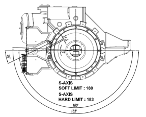
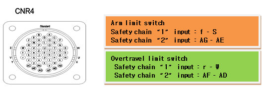

1.1.2.1. Outline
The limit switch that is installed at the end of the operation area of each axis of the robot has been activated. The robot will be immobilized immediately for safety reasons and will not be operational until it is moved to a safe operation area through an appropriate method.
1.1.2.2. Causes and checking methods
|
(1) Please confirm if the robot actually went out of the operation area. n Methods for recovery when deviating from the operation area
(2) If an error occurs even though the robot is in the operation area n Checking method from a system board connector (CNLS) n Checking method from a wire harness (CNR4 or CNR04) n Checking method by examining the limit switch and the internal wiring of the main frame |
(1) Please confirm if the robot actually went out of the operation area.
Please confirm if the robot actually went out of the operation area. If a soft limit error has occurred simultaneously, the robot did go out of the operation area.
Please take an appropriate action to move the robot back into the operation area.
The operation area may vary depending on each robot model, so as the installed location of limit switches. Please refer to the corresponding robot's maintenance manual, "Limitations of Operation Area."
Figure 5.1 Installed locations of the hardware limit switches

Figure 5.2 Operation area for the S-axis limit switch
n Methods for recovery when deviating from the operation area
Please take the following actions to move a robot while the hardware limit switch is on. First, enter the system on manual mode, and turn on the enabling switch of the teach pendant.
From this stage, execute the motor on command, and move the robot back into the operation area by using a jog key.
(2) If an error occurs even though the robot is in the operation area
First, check if the limit (over-travel) is being entered consecutively from the Private input signal window of the teach pendant.
This window can be accessed by selecting "[F1]: Service" → "1: Monitoring" → "2: Input/output signal" → "1: Private input signal."
A yellow color on the limit (over-travel) indicates an error status.
In these cases, the cause of this error can be found from the components that are related to the limit switch. As shown in the diagram below, the limit switch is connected to a controller's system board from a main frame by using "CER1–CEC1" cables.
Figure 5.3 Wirings that are related to a limit switch status input
The main checkpoints and their orders are as follows
① Sequence Board
② Controller internal wiring and connectors
③ Wire harness and connectors
④ Limit switch and the wiring of the main frame
and please jump the input line of the limit switch at an appropriate point to check if a limit (over-travel) from the monitoring windows turns to white color.
Please proceed as follows.
n Checking method from a system board connector (CNLS)
This method uses the CNLS connector of the system board to judge if board malfunction caused this error.
Please jumper short the pins that are related to the limit switch's input from a CNLS connector, as shown below. At this stage, please check the limit (over-travel) from the Private input signal monitoring window.
① If it turned to white, system board malfunction caused this error. Please replace the board.
② If it still turned to yellow, please search a problem that caused this error in an area between the system board and the limit switch of main frame.
n Checking method from a wire harness (CNR04 or CNR41)
This method uses a wire harness connector (CNR04 or CNR4) to judge if cable malfunction caused this error.
Please remove the CNR4 wire harness, and jumper short the pins that are related to the limit switch from the CNR4 connector that is attached to a controller. At this stage, please check the limit (over-travel) from the Private input signal monitoring window.
① If it turned to non-inverting,
the internal CNR4 connector (of a controller) – system board cable or a connector malfunction caused this error. Please examine or replace them.
② If it is still inverting, which indicates that the error persists,
please search the problem that caused this error in the area between the CNR4 connector and the limit switch of the main frame.
Please reconnect the CNR4 wire harness, and remove the CNR04 wire harness from the main frame. After that, please jumper short the pins that are related to the limit switch from the CNR04 connector.
At this stage, please check the limit (over-travel) from the Private input signal monitoring window.
① If it turned to non-inverting,
the wire harness cable between the CNR04 connector – CNR4 connector or a connector malfunction caused this error. Please examine or replace them.
② If it is still inverting, which indicates that the error persists,
please search the problem that caused this error in the area between the main frame side's CNR04 connector and the limit switch.

n Checking method by examining the limit switch and the internal wiring of the main frame
Please remove the CNR04 wire harness from the main frame, and use a multimeter to run a short (shortage) test to examine the lines that are related to the limit switch from the main frame's CNR04 connector.
① If the resistance is measured as open status,
a limit switch or a limit switch – CNR01 connector, or a connector malfunction is suspected. Please examine or replace them.
② If the resistance is measured as short (shortage) status,
other parts need to be examined. Please make an inquiry to our office.